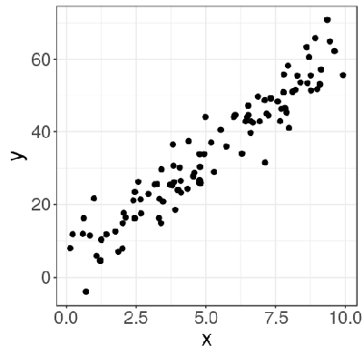
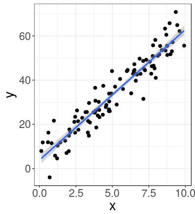
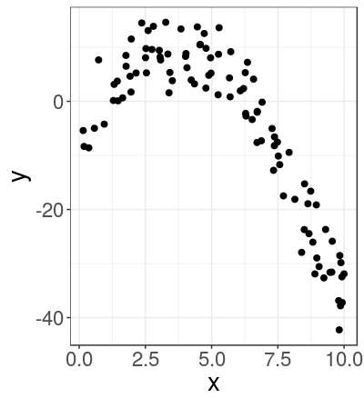
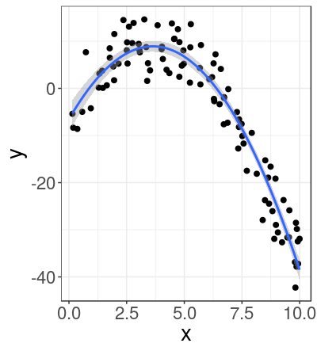
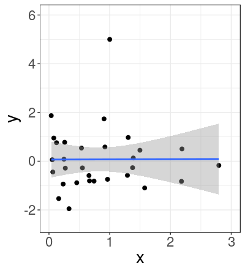
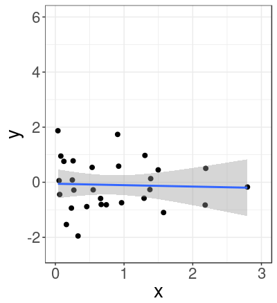

Regression: validation and common pitfalls
Online lesson from biological data analysis modules

What will you learn?
In this lesson you will learn to:
- Interpret the common validation plots for regression
- Be aware of common pitfalls when fitting regression models
Overview of Regression using a Linear Model
- Regression uses quantitative continuous explanatory variables.
- Regression estimates the parameters of a relationship between two (or more) continuous variables.
- Regression can use:
- several continuous explanatory variables (classically this would be called multiple regression)
- a mix of continuous and qualitative explanatory variable (classically this would be called ANCOVA)
Overview: Linear Model Assumptions for Regression
The assumptions of a general linear model are:
- Residuals are independent
- Residual variance is the same for all fitted values
- Residuals follow a normal distribution
When a quantitative variable is used as an explanatory variable there is an additional assumption:
- All explanatory variables are measured with no uncertainty
Overview: Example of fitting a straight line (linear regression)
Here are two continuous variables (x and y). These data appear to form a straight line relationship.
We can use R to fit a linear model to infer the linear relationship.
The code is:
# Fit a straight line with a linear model
m = lm(y ~ 1 + x, data=d)
Overview: Example of fitting a straight line (linear regression)
Here is the fitted linear relationship.
There are two parameters when fitting a straight line: the intercept ($\text{a}$) and the slope ($\text{b}$)
$$y = \text{a} + \text{b} \, x$$The fitted values for these parameters (with standard errors) are $$\text{a}=3.9 \pm 1.2$$ $$\text{b}=5.9 \pm 0.2$$
Overview of Regression using a Linear Model
- A linear model can be used to analyse non-linear relationships (e.g a quadratic relationship $y=\text{a}\,+\,{b}\,x\,+\,\text{c}\,x^2$)
- A linear model is linear in its parameters (e.g. the $\text{a}$, $\text{b}$ and $\text{c}$ in the above equation)
- A linear model with a single continuous explanatory variable is equivalent to a classical linear regression
Overview:
Example of fitting a curve

We can use R to fit a linear model to infer a quadratic relationship between two continuous variables (x and y).
The code is:
# Fit a curve with a linear model
m2 = lm(y ~ 1 + x + I(x^2), data=d2)
Overview:
Example of fitting a curve

Here is the fitted quadratic relationship (blue line).
There are three parameters when fitting a quadratic relationship $$y = \text{a} + \text{b} \, x + \text{c} \, x^2$$ here they are called $\text{a}$, $\text{b}$ and $\text{c}$.
The fitted values for these parameters (with standard errors) are $$\begin{align*} \text{a} &= -6.5 \pm 1.5\\ \text{b} &= 8.5 \pm 0.6\\ \text{c} &= -1.17 \pm 0.06 \end{align*} $$
Common pitfalls: Fitting inappropriate relationships
(Video 2 mins 22 sec)
Common pitfalls: Fitting inappropriate relationships
The R code for fitting a linear model with a straight line relationship and creating model validation plots is
# Fit a straight line with a linear model
m = lm(y ~ 1 + x, data=d)
# Plot four validation plots in a 2x2 grid
par(mfrow=c(2,2)) # Split graphics into a 2x2 grid
plot(m, which=c(1:4)) # Display the plots
par(mfrow=c(1,1)) # Return graphics to a single window
par(mfrow=c(2,2)) puts the four plots side by side, as shown at the end of the video.
Common pitfalls:
Influential data points
(Video 2 mins 50 sec)
Common pitfalls:
Influential data points
The R code for fitting a linear model with a straight line relationship and plotting Cook's distance is
# Fit a straight line with a linear model
m = lm(y ~ 1 + x, data=d)
# Plot Cook's distance to test for influential data points
plot(m, which=4) # Display plot of Cook's distance
plot(m, which=5) # Display another plot of Cook's distance
Common pitfalls:
Influential data points

Outliers need not have a strong influence on the fitted model.
Here we have a model with an outlier at x=1, y=5.
Common pitfalls:
Influential data points

Removing this data point and refitting the model has very little effect on the fitted relationship.
We could leave this outlier in the model because it has no trong influence on the final result.
Common pitfalls:
Influential data points
Common pitfalls:
Extrapolation
(Video 2 mins 11 sec)
Common pitfalls:
Missing explantory variables
(Video 2 mins 58 sec)
Key Points
- Avoid fitting inappropriate relationships by thoroughly visualising the data before model fitting
- A robust model should not be strongly influenced by any one data point
- Do not automatically remove outliers from your dataset
- Avoid making predictions outside the range of your data (avoid extrapolation)
- Include all appropriate explanatory variables in a model